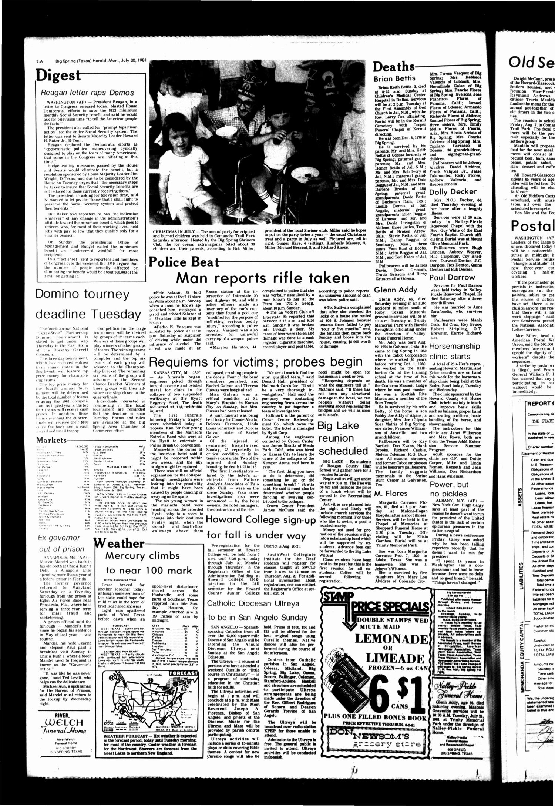

HN-728: Hyatt walkway toll at 113 while structural investigation begins
HN-728 · July 21, 1981 · Disasters, Accidents & Emergencies > Building & Infrastructure Collapses > Walkways and public structures

page image (issue PDF)Recorded finding
Discovery narrative
Source: Banner-Graphic, p. 2 — archive-indexed original page; NIST investigation history.
Report: An Associated Press follow-up reported 113 dead and 186 injured, the beginning of funerals, and engineering examination of the suspended walkways that collapsed at the Kansas City Hyatt Regency on July 17.
Assessment: An interim toll, with even historical NIST pages using 113 and 114 in different summaries. NIST's timeline lists 114 deaths, and its inquiry linked the collapse to a connection design change. The digitized page header reads July 20 although the archive indexes it as July 21; publication-date metadata needs checking against the photographed issue before formal citation.
Original archive images (2)
Authentic images retrieved from Southwest Collection (Texas Tech University) and Hoosier State Chronicles (Indiana State Library). Article crops are located using the archive's own OCR word coordinates and rendered at native crop resolution; article clips are assembled from the archive's own article-block images; page images marked "archive tiles" are stitched from the archive's own tiled page service at its 256-px tile cap; page images marked "issue PDF" are single pages rasterised from the archive's own issue PDF, with the page chosen by matching the headline against the PDF's text layer; page scans are reduced-size access renditions. No images were generated, mocked, or retouched.

Southwest Collection (Texas Tech University)
Open larger view · Archive viewer (full resolution)

Hoosier State Chronicles (Indiana State Library)
Open larger view · Archive viewer (full resolution)
Source acquisition
Status: Archive images acquired
Authentic archive-owned image renditions were retrieved for this record and are displayed above. The source-acquisition manifest preserves the original pre-acquisition feasibility assessment.
Original seed
URL (preserved verbatim): https://newspapers.library.in.gov/?a=d&d=BG19810721.1.2
Saved research report: Historical_Newspaper_Event_Research_728-752_2026-10-23.md
Evidence note: A newspaper report means a historical publication made a claim; it does not establish that claim as fact. Contemporary reporting is separated from later scholarly context and our own assessment.